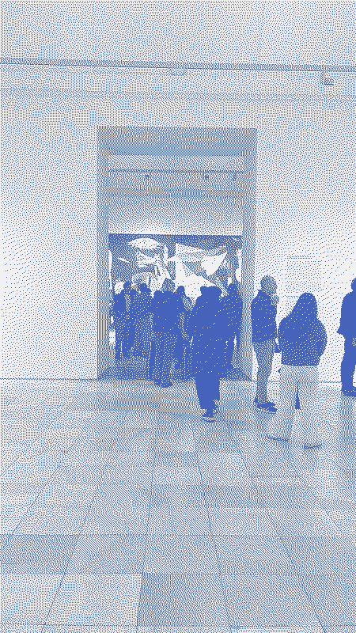
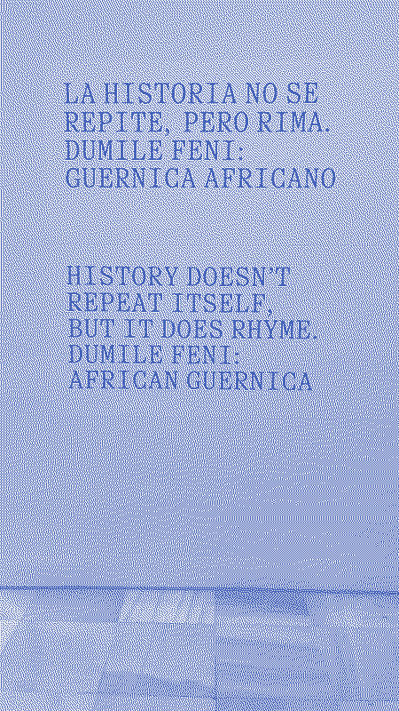
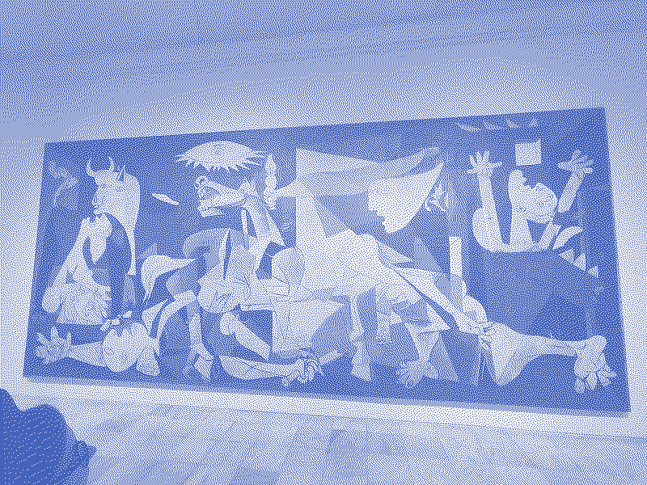
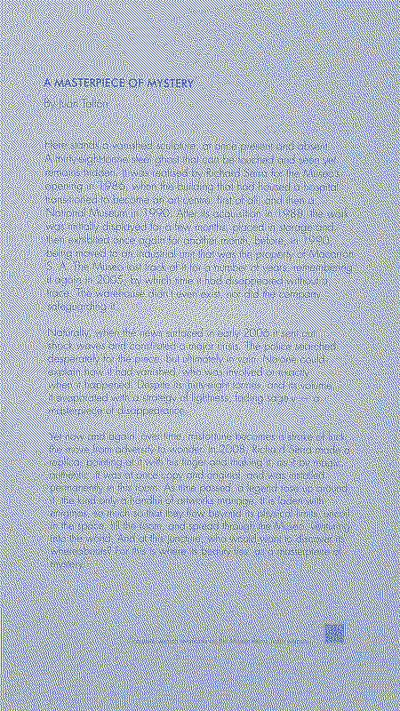

Day note synthesis
The course had ended. This was personal.
An audioguide rented at the door. All the floors. Four to five hours alone in the building, moving at own pace through the argument the museum makes about modernism, trauma, representation and the expansion of historical memory.
Avant-Garde Territories built the ecology of modernism — not a sequence of masterworks but a cultural network of city, magazine, manifesto, poster, architecture and film. Cubism as the visual language of the fragmented modern metropolis. The Delaunays collapsing the boundary between art and daily life. Miró preserving play. Dalí opening into the unconscious. Bohemia as experimental community. The avant-garde magazines as proto-internet: rapid, transnational, distributed.

Guernica room, Reina Sofía | Day 7 © Filipe GamaThen Guernica. Picasso working from newspapers and testimony, not direct witness — the same position Goya occupied painting El 2 de mayo de 1808 en Madrid and El 3 de mayo en Madrid, six years after the events. The same refusal of heroism. The same insistence on the body, fragmented and specific, over the cause. The tradition of the war reporter who will not produce the official version.

History doesn’t repeat itself | Day 7 © Filipe GamaThen Dumile Feni — the African Guernica. “History doesn’t repeat itself, it does rhyme.” The same expressionist language of suffering bodies, displaced from Europe to Africa, from fascist bombardment to colonialism and apartheid. The question the exhibition asks: which suffering enters museums? Which tragedies are universalised? Whose bodies are invisible in the canon of historical pain?

Guernica, Reina Sofía | Day 7 © André AlmeidaThe triptych the Reina Sofia completes across its walls: Goya, Picasso, Feni. Three centuries. Three different geographies of violence. The same refusal. The same rhyme.
Contemporary Art post-1975 changed the register: installation, video, archive, performance. The object giving way to the interrogation of systems. The visitor pulled into interpretive labour. Minorities, memory, identity, postcoloniality — the question of who has the right to representation, running through every room.
The observation that held the whole afternoon together: culture is not a supplement to education. It is a technology for reading the world.

Richard Serra, vanished sculpture, Reina Sofía | Day 7 © Filipe GamaSee Museo Nacional Centro de Arte Reina Sofia for the full notes.
Museo Nacional Centro de Arte Reina Sofia
Solo Visit with Audioguide — Saturday Afternoon, 9 May 2026
4–5 hours. All the floors. The audioguide running.
If the Prado gave the week its genealogy of representation — Fra Angelico’s ordered light through to Goya’s refusal to comfort — the Reina Sofia gave it the next chapter: the genealogy of critical modernity. The two museums are in direct conversation. The Prado ends roughly where the Reina Sofia begins. Goya is the hinge.
The observation noted in the working notes: “hello curadoria e scaffolding?” The audioguide is exactly that. It orients attention, selects routes, contextualises, sequences interpretation, activates connections, provides the vocabulary the image alone does not supply, regulates cognitive load. It is Universal Design for Learning applied to a museum visit: multiple means of access, learner-controlled pace, contextual support built in from the start. It is also CLIL in practice — specialised language scaffolded against real objects, meaning built through the encounter rather than prepared in advance.
I. Avant-Garde Territories — City, Fragmentation and the Invention of Modernity
The “Avant-Garde Territories” floor does not present a sequence of masterworks. It builds an ecology.
What becomes visible is that the historical avant-gardes did not emerge from individual genius. They emerged from a transformation of the total human environment: the growth of cities, the acceleration of time, industrialisation, urban masses, print culture, advertising, mechanised war, the international circulation of ideas through magazines and exhibitions and manifestos. The works on the walls are inseparable from the city outside the walls.
The city as perceptual laboratory. The modern metropolis fragments experience. The street is simultaneous, noisy, saturated, discontinuous. The Cubist move — multiple viewpoints, decomposed perspective, simultaneous representation of what cannot be seen from a single position — is not a formal innovation appended to reality. It is a translation of a new perceptual condition. The Renaissance perspective assumed a fixed observer: stable, central, commanding. The modern city dissolved that stability. Cubism recorded the dissolution.
Pre-Cubism searched for structure and geometric clarity in the aftermath of Impressionism’s dissolution of form. Cubism exploded it into multiplicity. Post-Cubism absorbed the lesson and made fragmented perspective a way of thinking about the world rather than just a technique for representing it.
Revistas, cartazes, artes menores. One of the floor’s most important arguments is the refusal to rank. The avant-garde magazines — little reviews, manifestos, typographic experiments, international networks of print — appear alongside the paintings. They were, the museum insists, the infrastructure through which modernism actually spread: not through museums, but through pages, covers, layouts, photographs, reproductions. A proto-internet of cultural circulation: rapid, remixable, transnational, community-distributed.
This collapses the boundary between high culture and communication design, between art and propaganda, between the museum object and the printed ephemeral. The same boundary that the week had been putting pressure on since Sunday. The wall between Goya’s paintings and a Padlet Arcade using Guernica is thinner than it appears.
Sonia and Robert Delaunay represent the dissolution of another border: between art, fashion, textile, performance and daily life. The modernist project, at its most expansive, was not about producing objects for contemplation. It was about redesigning experience. “Das artes menores” — the working notes caught the connection: the museum resists the hierarchy that places painting above design above craft above decoration. The same argument that the IES Príncipe Felipe made with its aesthetics and hairdressing labs.
Joan Miró preserves something that the avant-garde kept trying to recover: play, childhood, a language that has not yet been disciplined into convention. Miró is Picasso’s claim made painterly — “Every child is born an artist. The problem is how to remain an artist once we grow up.” The work looks easy. It is the result of a sustained and deliberate unlearning of everything that formal training installs.
Salvador Dalí takes the project somewhere else entirely: the unconscious, dream logic, desire, paranoia, the structures that resist rational order. If Cubism responds to the external fragmentation of the modern city, Surrealism responds to the internal fragmentation of modern psychology. The self, it turns out, is also not a fixed observer from a single stable position.
Bohemia runs through the floor as an organisational principle. The avant-gardes were not schools. They were experimental communities — networks of shared practice, shared risk, shared refusal of the dominant order. What they produced required the conditions of proximity, exchange and collective permission-giving. The IES Príncipe Felipe’s “alumnos wifi” is one contemporary echo. The course that just ended is another.
II. Guernica and the African Guernica — Art as Historical Conscience
The Guernica room functions as the museum’s moral centre.
Guernica (Picasso, 1937) is a 7.7-metre painting made in response to the Nazi aerial bombardment of a Basque town on 26 April 1937. Picasso was not there. He constructed the work from newspaper reports, photographs, and testimony. The fact matters: Guernica is not documentary evidence. It is mediated witness — the same position Goya occupied when he painted the 2 and 3 de Mayo six years after the events.
Both painters worked from memory, testimony and moral urgency rather than direct observation. Both produced works that refuse heroism. Both gave the body — fragmented, agonised, specific — more weight than the cause. The tradition running from Goya through Picasso is a tradition of the war reporter who refuses the official version: who says, this is what it looked like, this is what it did to people, there are no clean hands here.
The formal language of Guernica — monochrome, Cubist fragmentation, screaming mouths, distorted limbs, a horse collapsing, a bull watching, a lamp like an eye — constructs what the working notes called “verdade emocional e civilizacional”: emotional and civilisational truth. Not what happened at a specific location on a specific day. What happens when human beings decide to bomb civilian populations. The universal compressed into the particular.
Dumile Feni — The African Guernica. The exhibition title is the thesis: “History doesn’t repeat itself, it does rhyme.”
Dumile Feni (1942–1991) was a South African artist who developed his practice under apartheid, in exile, in the same visual language as the European expressionist tradition — distorted, suffering, spectral bodies — but pointed at a different geography of violence: colonialism, apartheid, structural racism, the systematic erasure of African subjectivity from the canon of historical pain.
The dialogue the museum stages between Guernica and the African Guernica asks several questions at once. Which suffering enters museums? Which tragedies are universalised? Which victims are rendered invisible by the architecture of cultural memory? Picasso’s painting became the 20th century’s image of civilian suffering. Feni’s work, made in the same period and with the same moral intensity, remained largely outside the canon that Picasso occupied.
The triptych the Reina Sofia makes visible across its walls: Goya at the Prado (Napoleonic war, 1808), Picasso at the Reina Sofia (Fascist bombardment, 1937), Dumile Feni at the Reina Sofia (colonial and apartheid violence, same century). Three war reporters. Three different centuries and geographies. The same refusal of the heroic narrative. The rhyme that history produces, moving through different bodies and different languages, not repeating but recognisably itself.
The connection to Toledo the day before is exact. The same question: who gets a face? Goya gave faces to the victims of the Third of May and denied them to the firing squad. Picasso gave faces to the suffering of Guernica and denied them to the mechanism of the bombardment. Feni gave faces to the suffering that the dominant canon had chosen not to see. Toledo showed what happens when three traditions share space; the African Guernica shows what happens when one of them controls the frame.
III. Contemporary Art, 1975–Present — Archive, Identity and the Interrogation of Systems
The post-1975 floor is a different kind of claim.
The work here is often not painting or sculpture in the conventional sense. It is installation, video, performance, document, spatial intervention, archive. The object has given way to the process. The finished work has given way to the act of asking.
What contemporary art after 1975 does, the floor argues, is no longer primarily to represent the world. It interrogates the systems through which the world is organised and made legible: political systems, media systems, colonial systems, identity systems, institutional systems. The museum itself is one of those systems — and some of the works on the floor are, implicitly or explicitly, about the museum housing them.
The visitor changes function. In the Prado, looking was the primary act. The works were delivered; the viewer attended. In the contemporary collection, the viewer is pulled into interpretive labour. The work rarely provides a single reading. It requires negotiation, inference, contextualisation, historical consciousness. The “multiple means of action and expression” that UDL describes as a principle of good design are here the default conditions of engagement.
“Os públicos. As minorias e a consciência.” The note captures what the floor insists on: the emergence of voices and bodies and memories that the modernist canon systematically excluded. Gender, postcoloniality, hybrid identities, silenced memories, peripheral subjectivities. The question “who has the right to representation?” runs through the floor as its organising argument. It connects directly to the European Dimension session’s discussion of dissemination: whose work is visible, whose practice is legitimised, whose experience enters the archive.
The “caldo cultural.” The observation that marked the whole day was this: each work in the museum participates in a larger ecology of meanings. Nothing here is isolated. Every painting carries debates, languages, memories, conflicts, technologies, urban transformations, shifts in sensibility. The audioguide made this visible by tracing the threads. Without it, the works could be encountered individually, aesthetically, quietly. With it, they became what they are: nodes in a network of historical argument.
This is what the week had been practising since Sunday: reading the network, not just the object. Reading Las Meninas for what it says about power and representation, not just for its extraordinary technique. Reading the 3 de Mayo for what it says about who gets a face in the official record. Reading Toledo for what its architecture says about coexistence and its limits. The Reina Sofia made explicit what the week had been developing as a method: that culture is not a supplement to education. It is a technology for reading the world.
The Full Arc
Prado on Wednesday. Reina Sofia on Saturday. The two museums form a single argument across five days.
The Prado: how images produce meaning, from Fra Angelico’s geometric certainty to Goya’s refusal of comfort. Six centuries of representation as a tool for constructing reality.
The Reina Sofia: how the modern world broke that certainty and what artists did with the fragments. The city as perceptual laboratory. The war as subject that resists heroism. The body as archive of historical violence. The museum as a system that can expand or contract the canon of whose suffering counts.
Between them: the IES Príncipe Felipe’s audiovisual labs, where students learn to produce the images the Prado and Reina Sofia teach you to read. The presentation with the artworks as visual anchors. The coordinator’s confirmation that the art was intentional. The phrase “history rhymes” on a wall in the Reina Sofia, which had been the thread since 3 May in Madrid, in the city where Goya painted what happened on 3 May, in 1808.
Aprender é aprender a interpretar sistemas culturais. Learning is learning to read cultural systems. The Reina Sofia said it on a Saturday afternoon, five days after the week began, and it was exactly what the week had been saying all along.
References
- Guernica
- Picasso
- Dumile Feni
- Goya
- El 2 de mayo de 1808 en Madrid
- El 3 de mayo en Madrid
- Las Meninas
- El Greco
- Cubism
- Visual Learning
- Media Literacy
- AI Literacy
- Universal Design for Learning
- CLIL
- Scaffolding
- Context4Content
- Heritage as Curriculum
- Place-based Learning
- Fiat Humanitas
- European Dimension in Education
Part of Dissemination & Reflection, under Active Methodologies for Teaching and Learning. LearningLandscapes Context4Content